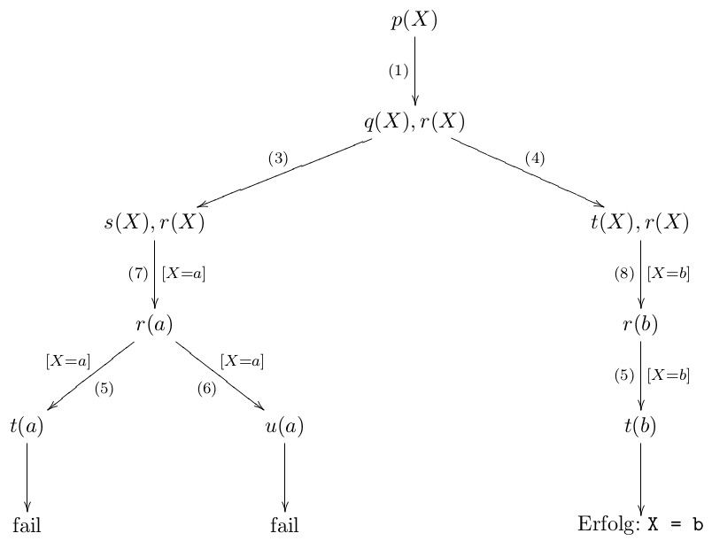

Stellen Sie folgende Sachverhalte über Prädikate dar:
- Die Mutter von Paul ist Marta.
mutter(paul, marta)
- Prolog ist eine Programmiersprache
programmiersprache(prolog)
- Das Ergebnis vom Term f(x,y) ist 5
ergebnis(f(X,Y), 5)

Stellen Sie folgende Sachverhalte über Prädikate dar:
mutter(paul, marta)
programmiersprache(prolog)
ergebnis(f(X,Y), 5)
(Klausur SS2011-2)
Sind folgende Prolog-Termpaare unifizierbar? Geben Sie ggf. die jeweiligen
Variablenbindungen an bzw. begründen Sie, warum die Unifikation nicht erfolgreich ist.
[X,Y,a] und [Z,b,Z]
Ja: Y = b, Z = a, X = Z.
[X,Y,Z|A] und [[a,b,c],d]
Nein: linke Liste hat mind. 3 Elemente, rechte nur 2.
f1(f2(f3,f4),f5(f6,X,Y),g) und f1(A,f5(B,f7,f8),H)
Ja: A = f2(f3,f4), B = f6, X = f7, Y = f8, H = g.
(Klausur SS2011-1)
Sind folgende Prolog-Termpaare unifizierbar? Geben Sie ggf. die jeweiligen
Variablenbindungen an bzw. begründen Sie, warum die Unifikation nicht erfolgreich ist.
f(X,Y,Z) und f(g(Y),g(Z),a)
Ja: Z = a, Y = g(a), X = g(g(a)).
p([],X,a,[Y|Z]) und p(_,[hans],a,[hans])
Ja: X = [hans], Y = hans, Z = [].
a(b,X,d(e,Y,g(i,i,Z),f(j,Z))) und a(U,c,d(V,f,g(W,i,j),f(Z,W)))
Nein: W = i, Z = j und W = Z sind nicht unifizierbar.
(Klausur SS2009)
Sind folgende Prolog-Termpaare unifizierbar? Geben Sie ggf. die jeweiligen
Variablenbindungen an bzw. begründen Sie, warum die Unifikation nicht erfolgreich ist.
p(g(X,Y),a,f(X)) und p(g(Z,Z),Z,f(b))
Nein: X=Z, Y=Z, Z=a und f(a) und f(b) sind nicht unifizierbar.
p([], X, Y) und p(S, [T|S], T)
Ja: S=[], X=[T], Y=T.
q([[X|Y],f(a)]) und q([Z, f(X)|Y])
Ja: Z=[a], X=a, Y=[].
(Klausur SS2009)
Gegeben sei folgendes Prolog-Programm:
(1) p(X) :- q(X), r(X). (2) p(X) :- q(X). (3) q(X) :- s(X). (4) q(X) :- t(X). (5) r(X) :- t(X). (6) r(X) :- u(X). (7) s(a). (8) t(b). (9) u(c).
Welche Antwort liefert die folgende Anfrage? (Falls mehrere Antworten möglich sind, geben Sie nur diejenige an, die von Prolog zuerst berechnet wird.)
?- p(X).
Erklären Sie, wie diese Antwort zustande kommt, indem Sie die Bearbeitung der Anfrage durch Angabe eines Ableitungsbaums schrittweise nachvollziehen.
(1) p(X) :- q(X), r(X). (2) p(X) :- q(X). (3) q(X) :- s(X). (4) q(X) :- t(X). (5) r(X) :- t(X). (6) r(X) :- u(X).
(7) s(a). (8) t(b). (9) u(c).
?- p(X).

(Klausur SS2011-2)
Definieren Sie ein Prolog-Prädikat palindrom(L), welches genau dann erfüllt ist,
wenn die übergebene Liste L ein Palindrom ist.
palindrom(X) :- reverse(X,Y), X=Y. reverse([],[]). reverse([H|T],Neu2) :- reverse(T,Neu), append(Neu,[H],Neu2).
Definieren Sie ein Prädikat teilstueck(L,T) mit der Bedeutung: Die Liste T ist ein Teilstück der Liste L.
Dies ist genau dann der Fall, wenn alle Elemente von T in der gleichen Reihenfolge in L auftreten, ohne von anderen
Elementen unterbrochen zu werden.
Beispiel:
[1,2,3] ist ein Teilstück von [0,1,2,3,4,5], aber weder Teilstück von [0,1,2,77,3]
noch von [1,2] oder [5,4,3,2,1].
teilstueck(L,T) :- append(_,T,Left), append(Left,_, L).
(Klausur SS2011-2)
Definieren Sie ein Prolog-Prädikat komprimiere/2, das aus einer Liste zusammenhängende Duplikate entfernt.
Beispiel:
?- komprimiere([a,a,a,a,b,c,c,a,a,d,e,e,e,e,e],R). R = [a,b,c,a,d,e].
komprimiere([],[]). komprimiere([A],[A]). komprimiere([A,A|Liste],Res) :- komprimiere([A|Liste],Res). komprimiere([A,B|Liste],[A|Res]) :- A \= B, komprimiere([B|Liste],Res).
(Klausur SS2010-1)
Schreiben Sie ein Prolog-Programm für ein Prädikat count(E,L,R) mit der folgenden
Bedeutung: das Element E ist in der Liste L insgesamt R-mal enthalten.
Beispiel:
?- count(a, [a,b,c,a,a,d], R). R = 3
count(_, [], 0). count(X, [X|Xs], R) :- count(X, Xs, R1), R is R1+1. count(X, [Y|Xs], R) :- X \= Y, count(X, Xs, R).
(Klausur SS2011-1)
Definieren Sie ein Prolog-Prädikat ist_menge(L), welches genau dann erfüllt ist,
wenn die übergebene Liste L eine Menge ist, d .h. jedes Element genau einmal vorkommt.
ist_menge([]). ist_menge([Kopf|Rest]) :- \+(member(Kopf, Rest)), ist_menge(Rest).
(Klausur SS2010-1)
Schreiben Sie ein Prolog-Programm für ein Prädikat dupn(L,N,X) mit der folgenden Bedeutung:
X ist die Liste L, wobei alle Elemente N-fach dupliziert sind.
Beispiel:
?- dupn([a,b], 3, X). X = [a, a, a, b, b, b]
dupn(X,1,X). dupn([A],Anzahl,Erg) :- AnzahlN is Anzahl-1, dupn([A], AnzahlN,ErgN), Erg = [A|ErgN]. dupn([A|Liste],Anzahl,Erg) :- dupn([A],Anzahl,AErg), dupn(Liste,Anzahl,LErg), append(AErg,LErg,Erg).
(Klausur SS2012-1)
Definieren Sie ein Prolog-Prädikat zip(L1,L2,L3), welches analog zur Haskell-Funktion zip funktioniert,
d. h. falls eine der beiden Listen länger als die jeweils andere Liste ist, wird der Rest der Liste ignoriert.
Beispiel:
?- zip([1,2,3],[a,b,c],R). R = [ (1, a), (2, b), (3, c)]
zip([],_,[]). zip(_,[],[]). zip([E1|R1],[E2|R2],[paar(E1,E2)|Rest]) :- zip(R1,R2,Rest).
(Klausur SS2012-1)
Wie sieht die Definition für ein Prädikat unzip/3 aus, welches zu dem in der letzten Teilaufgabe definierten Prädikat zip passt?
Beispiel:
?- unzip([(1,a),(2,b),(3,c)],F,S). F = [1, 2, 3], S = [a, b, c]
unzip(XY,X,Y) :- zip(X,Y,XY).
(Klausur SS2010-1)
Gegeben sei das folgende CHR-Programm:
r1 @ tak(X,Y,Z,A) <=> X =< Y | Z = A.
r2 @ tak(X,Y,Z,A) <=> X > Y |
X1 is X-1, Y1 is Y-1, Z1 is Z-1,
tak(X1,Y,Z,A1), tak(Y1,Z,X,A2), tak(Z1,X,Y,A3),
tak(A1,A2,A3,A).
Ergänzen Sie im Folgenden die Regelanwendungen und die dabei entfernten und erzeugten
Constraints für die Eingabe tak(3,2,4,R):
| Regel | Entfernt | Erzeugt |
|---|
r1 @ tak(X,Y,Z,A) <=> X =< Y | Z = A.
r2 @ tak(X,Y,Z,A) <=> X > Y |
X1 is X-1, Y1 is Y-1, Z1 is Z-1,
tak(X1,Y,Z,A1), tak(Y1,Z,X,A2), tak(Z1,X,Y,A3),
tak(A1,A2,A3,A).
| Regel | Entfernt | Erzeugt |
|---|---|---|
| r2 | tak(3,2,4,R) | tak(2,2,4,A1), tak(1,4,3,A2), tak(3,3,2,A3), tak(A1,A2,A3,R) |
| r1 | tak(2,2,4,A1) | A1 = 4 |
| r1 | tak(1,4,3,A2) | A2 = 3 |
| r1 | tak(3,3,2,A3) | A3 = 2 |
| r2 | tak(4,3,2,R) | tak(3,3,2,A1), tak(2,2,4,A2), tak(1,4,3,A3), tak(A1,A2,A3,R) |
| r1 | tak(3,3,2,A1) | A1 = 2 |
| r1 | tak(2,2,4,A2) | A2 = 4 |
| r1 | tak(1,4,3,A3) | A3 = 3 |
| r1 | tak(2,4,3,R) | R = 3 |
Definieren Sie ein CHR-Programm, dass bei Eingabe mehrerer num/1 Constraints
das Maximum der übergebenen Zahlen bestimmt und in einem einzigen max/1 vorhält.
Beispiel:
?- num(1), num(8), num(7), num(2), num(0), num(9), num(0), num(9). num(9) num(0) num(9) num(0) num(2) num(7) num(8) num(1) max(9) true .
chr_constraint num/1, max/1. num(A) ==> max(A). max(A) \ max(B) <=> B =< A | true.
Entwickeln Sie ein CHR-Programm, dass die zweistellige "kleiner-gleich" Relation als leq/2 Constraint abbildet.
Implementieren Sie Regeln zur Sicherstellung der Reflexivität, Antisymmetrie und Transitivität. Doppelte leq/2
Constraints sollen entfernt werden.
?- leq(1,2), leq(3,8), leq(3,9), leq(1,9). leq(1,3) leq(1,8) leq(2,8) leq(2,9) leq(2,3) leq(1,9) leq(3,9) leq(3,8) leq(1,2) true
chr_constraint leq/2. reflexivity @ leq(X,X) <=> true. antisymmetry @ leq(X,Y), leq(Y,X) <=> X=Y. idempotence @ leq(X,Y) \ leq(X,Y) <=> true. transitivity @ leq(X,Y), leq(Y,Z) ==> leq(X,Z).
Paul ist ein rauchender Schwabe: Er weiß, dass jede gerauchte Zigarette einen Stummel hinterlässt,
und dass er aus drei Stummeln eine neue Zigarette basteln kann.
Um am Ende des Tages zu wissen, wieviele Zigaretten er geraucht hat, zählt Paul über ein geraucht/1
Constraint mit.
Schreiben Sie ein CHR-Programm, das Paul beim Rauchen hilft!
Beispiel:
?- zigarette, zigarette, zigarette, zigarette, stummel, stummel, geraucht(0).
stummel
stummel
geraucht(6)
true
zigarette, geraucht(N) <=> stummel, N1 is N+1, geraucht(N1). stummel, stummel, stummel <=> zigarette.
Gegeben sei ein Array mit natürlichen Zahlen in der Form a(I,V), mit der Bedeutung, dass
an Stelle I des Arrays der Wert V steht.
Ein Beispielarray:
a(0,4), a(1,2), a(2,5), a(3,1)
Schreiben Sie eine CHR-Regel, welche ein derart gegebenes Array mittels Exchange Sort aufsteigend sortiert, d.h. es sollen jeweils zwei noch falsch sortierte Array-Einträge vertauscht werden.
Beispiel:
?- a(0,4), a(1,2), a(2,5), a(3,1). % a(3,5), a(2,4), a(1,2), a(0,1)
a(I,V), a(J, W) <=> I < J, V > W | a(I,W), a(J,V).
Schreiben Sie ein CHR Programm, welches die Summe aller geraden Werte im Array berechnet (in vorangegangenen Beispiel also die Summe 4+2).
Falls ihr Programm Eingaben zusätzlich zum Array benötigt, geben Sie dies an.
a(I,V) ==> V mod 2 =:= 0 | sum(V). sum(V1), sum(V2) <=> V is V1+V2, sum(V).
... zum Repetitorium gibt's hier:
fnogatz.github.io/talks/pdp-rep-13/prolog-chr/
Thanks to Benjamin Erb for the html5slides and uulm template.
Title image: Miran Lipovača under CC BY-NC-SA 3.0